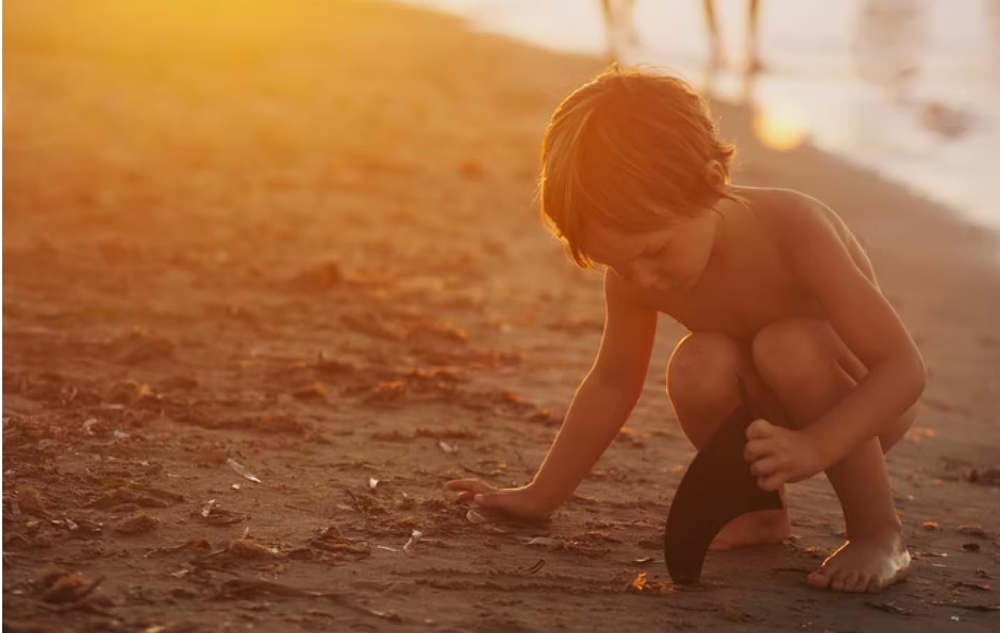
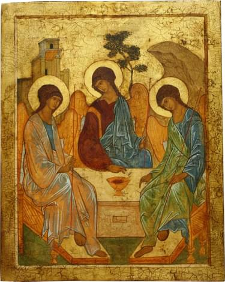

Как современному человеку понять, что Бог это Троица? Почему любовь к юноше или девушке невозможна без любви к Богу?
Предлагаем вниманию читателей материалы духовного наследия русского старца, духовника Свято-Троицкой Сергиевой Лавры, архимандрита Кирилла (Павлова, 1919 — 2017)
Однажды блаженный Августин, утомившись от размышлений о Святой Троице, вышел прогуляться на берег моря и увидел маленького мальчика, который ложечкой черпал морскую воду и носил ее к ямке, проделанной в песке. Выльет, наберет — выльет, опять наберет. «Что ты делаешь?» — спросил его блаженный Августин. «Да вот хочу вычерпать море и перенести его в эту ямку», — простодушно ответил мальчик. «Малыш, твоя затея бессмысленна!» — воскликнул богослов. «Нет, — сказал мальчик, — скорее я вычерпаю ложкой море, чем ты своим умом проникнешь в тайну Троицы». Сказал и исчез. Был это, наверное, Ангел…
Тайна Пресвятой Троицы
Тайну Пресвятой Троицы человечеству приоткрыл преподобный Андрей Рублев, создав икону для главного — Троицкого — собора Свято-Троицкой Сергиевой Лавры, где сегодня теплятся лампады над ракой Преподобного Сергия. Три Ангела — Три Лица Пресвятой Троицы — являют собой образ Божественной любви и одновременно — первообраз общения между любящими людьми, живущими единой жизнью в мире, тишине и согласии.

«Любовь составляет высшее благо в нашей христианской жизни, — говорил духовник Свято-Троицкой Сергиевой Лавры архимандрит Кирилл (Павлов), — и без любви все наши дела благочестия: пост, молитва, воздержание, целомудрие, благотворительность — не будут иметь никакой нравственной цены… Почему? Потому что Бог по своей природе, по существу есть Бог любви и Бог мира» [1, 74].
Протоиерей Валериан Кречетов, почетный настоятель храма Покрова Пресвятой Богородицы в с. Акулово Московской области:
«Бог — не просто Бог, а Бог — Троица. Бог един, но не один. Един — это единство сущности и единство всего бытия. Сербский подвижник наших дней, уже прославленный преподобный Иустин (Попович) замечательно сказал: „Любовь не есть свойство Божества, любовь есть сущность Божества“. Человек создан по образу и по подобию Божьему (Быт. 1:26), а потому присуще ему иметь любовь, иначе это недочеловек — получеловек. Вот эта сущность Божества — любовь — должна воплощаться в человеке, а выражается это в единении» [4, 93].
«Любовь не видит зла во зле».
Каждый, кто когда-либо обращался к старцу Кириллу (Павлову), попадал в «облако» добра, тишины и радости, чувствуя его неизъяснимую любовь. Но сам батюшка, говоря об отношении к Богу и человеку, подчеркивал, что Бог должен быть на первом месте — тогда все остальное на своем. «Ничего и никого не должно любить более Бога, будь это отец или мать; сын или дочь, или жена, — отмечал старец, — потому что все это временно, всего этого можно лишиться, один только Бог вечен, один Он вечно с нами пребудет, если мы полюбим Его, (…) и это люди узнают, когда будут умирать. Тогда все, что мы теперь любим, оставит, отвратится, убежит от нас; только один Христос нас не оставит ни при смерти, ни после смерти» [2, 83].
Когда мы будем умирать, только один Христос нас не оставит — ни при смерти, ни после смерти
Но что такое для современного человека любить Бога? В этом смысле ничего не изменилось с древних времен: любить Бога означает стараться выполнять Его Заповеди, изложенные в Евангелии.
Игумен Варнава (Федоров), насельник Свято-Троицкой Сергиевой Лавры, духовное чадо отца Кирилла (Павлова), уточняет:
«Но для этого надо прежде всего полюбить
Евангелие. А тому человеку, который Евангелие
никогда не открывал, это и не объяснишь, он
просто ничего не поймет — пока не прочитает…
Читая Евангелие, уже не человек, как это в
молитве происходит, с Богом беседует, а Сам
Господь с человеком говорит…
Мирянам батюшка советовал хотя бы по главочке одной в день Евангелия читать. И на самом деле убеждаешься: когда какая трудность возникает или вопрос мучает, а спросить особо не у кого, открываешь Евангелие и находишь и ответ, и утешение, и поддержку — от Самого Христа уже непосредственно. Я как-то спрашивал у батюшки: «А если вот, допустим, нет духовника. Что делать?» — «Если жить по Евангелию — никогда с пути истинного не собьешься».» [4, 238].
Подобно еще одному подвижнику XX века — старцу Сергию Орлову, который сформулировал христианское правило выживания в современном мире — «От нас зло не должно исходить», отец Кирилл (Павлов) возвысился до нового гимна в честь любви — «Любовь не видит зла во зле». В проповеди 15 августа 1993 года он рассуждал: «Как сама любовь чужда всякого коварства, всякого зла, так и в других, в любимом человеке она не видит этого зла. Любовь долготерпит, все покрывает, все недостатки, все слабости, немощи человеческие …» [1, 57].
Любовь не видит зла во зле. С одинаковой любовью старец Кирилл принимал Патриарха, архиереев, власть предержащих — и тут же — людей, страдающих зависимостями, уголовных авторитетов. Иногда к отцу Кириллу приходили подростки — в наколках, с сережками на языке, на веках. Ни тени упрека, осуждающего взгляда не было на лице отца Кирилла, только внимание, ласка, участие… Один из бывших «авторитетов», которого батюшка приблизил к себе, буквально переродился рядом с отцом Кириллом в любвеобильного старца, и в конце жизни поражал всех своей кротостью, готовностью услужить …
Феогност, митрополит Каширский, викарий Святейшего Патриарха Московского и всея Руси, наместник Донского ставропигиального монастыря в Москве.
«Чем больше тяжесть греховная — тем больше внимания и любви давал ему отец Кирилл. И люди менялись на глазах. Они выходили от него и светились: у них была радость и надежда на то, что Господь простит. И вместе с тем — осознание того, что нужно много и много трудиться.» [4, 139]. Уже в конце своей жизни отец Кирилл завещал своему духовному сыну, Блаженнейшему Митрополиту Киевскому и всея Украины Онуфрию (Березовскому) — «Жалей всех людей, и Бог тебя пожалеет».
Как побыстрее забыть любимую девушку?
На встрече с учащимися Московских духовных школ
12 марта 1996 года один из семинаристов спросил
отца Кирилла о том, как побыстрее забыть любимую
девушку, с которой не сложились отношения.
«А почему не получилось? — неспешно начал свой
ответ отец Кирилл, — Если причина уважительная,
что не состоялся союз, тогда трезво, разумно к
этому вопросу подойти, — и делает вывод —
Значит, Господь не благословляет, отводит его от
этого лица для его же пользы… Положиться на
благую волю Божию, Господь желает ему пользы,
поэтому скорбеть не должно» [3, 120]. Батюшка
призывает молодежь хранить чистоту и целомудрие,
удаляться от развращенных сообществ,
девственникам — особенно остерегаться общения с
лицами другого пола. Грешников буквально
выхаживает молитвой и кротким словом.
Любовь Владимировна Пьянкова, келейница архимандрита Кирилла:
«Один характерный случай рассказывал мне врач, который наблюдал уже тяжелобольного батюшку (…).
«Я, — говорит, — не отрицал Бога, но жил обычной жизнью нецерковного человека. И вот батюшка как-то пришёл ко мне на обследование, и у нас завязался разговор. Он меня спрашивает: „Ты крещёный?“ „Да, крещёный, — отвечаю. — Но я, батюшка, в церковь не хожу; я, — говорю — грешный человек, я женщин люблю“. А батюшка мне: „Ну, все мы грешные люди. Давай с тобой договоримся: я за тебя буду Богу молиться, а ты уж от своего греха как-то старайся воздерживаться, отстраняться. И в церковь все-таки ходи“. „И вот батюшкиными молитвами я, — говорит, — исправился и в церковь теперь хожу. Батюшка меня к Богу привёл“. То есть отец Кирилл его не укорил, не осудил, не поругал, а только сказал: „Давай договоримся, что я за тебя Богу буду молиться, а ты от своего греха отстраняйся“. А сколько таких судеб батюшка выправил!» [4, 145].
Старцы стараются сохранить то доброе, что есть между любящими людьми:
Протоиерей Валериан (Кречетов), почетный настоятель храма Покрова Пресвятой Богородицы в с. Акулово Московской области:
«Даже если какие-то искушения бывали между любящими, старцы старались так каждую из сторон расположить, чтобы только не разрушить любовь. У одной рабы Божией было общение с семейным человеком, и у семейных это вызывало смущение. И когда она попала к отцу Иоанну (Крестьянкину), на ее смущение он ответил: „Увлечение, как правило, греховно, а чувство свято“ [4, 190].
Подлинная любовь обнимает всех — друзей и врагов. «Надо мной смеются братия», — жаловался отцу Кириллу располневший монах. «Ну и пусть смеются, а ты молись за них, молись», — отвечал старец.
Зависть: темная и мучительная страсть
Зависть или печаль из-за благополучия ближних, по мнению отца Кирилла, есть страсть, противоположная христианской добродетели любви, самая тяжкая из всех.
«Зависть — темная и мучительная страсть, ибо она является первоначальным семенем всякого греха и зла, первой скверной, растлившей Небо и землю. Виновницей падения Денницы, начальника ангелов, изгнания прародителей из рая и осуждения их на смерть, а также первого убийства на земле была зависть» [2, 31], — говорит батюшка.
«Это страсть такова, что она прежде всего приносит мучение и печаль обладаемому ею. И завистливый человек сам в себе получает должное наказание. Поэтому-то святые отцы и говорят, что страсть зависти есть самая несправедливая из всех страстей и в то же время самая справедливая: несправедливая — потому что преследует все хорошее и доброе, справедливое — потому что мучает тех, кто ее имеет» [2, 33].
Спасение от зависти — в смирении и молитве. Отец Кирилл советует: «Когда видите ближнего, который в чем-то превосходит вас, не давайте места зависти, а вознесите теплую молитву ко Господу, чтобы он укрепил и умножил добродетели ближнего, тогда и вас Господь не оставит Своей милостью и любовью» [2, 29].
«От человека подвиг веры, от Бога — дар Любви»
— говорили святые отцы. Истинная, дарованная Богом любовь, нежная и хрупкая, обладает сверхъестественной внутренней силой. Как первые весенние цветы порой взламывают твердый асфальт, пробиваясь к солнцу, так и любовь преодолевает все трудности и невзгоды. И если в современном мире выживает сильнейший, то для Вечности выживает тот, кто пребывает в любви Божией, которая «никогда не перестает».
Какую роль играли бы поцелуи, не будь мы такими грешными людьми
25 мин07.03.2022
320 КоМментариев
Петр Кудрявцев
07.03.2022Всё именно так. Спасибо.
Анна Иванова
07.03.2022Большое вам спасибо за вашу помощь всем людям. В это не простое время самое главное сохранять спокойствие и выполнять все то, что вы сказали с верою на Божью помощь.